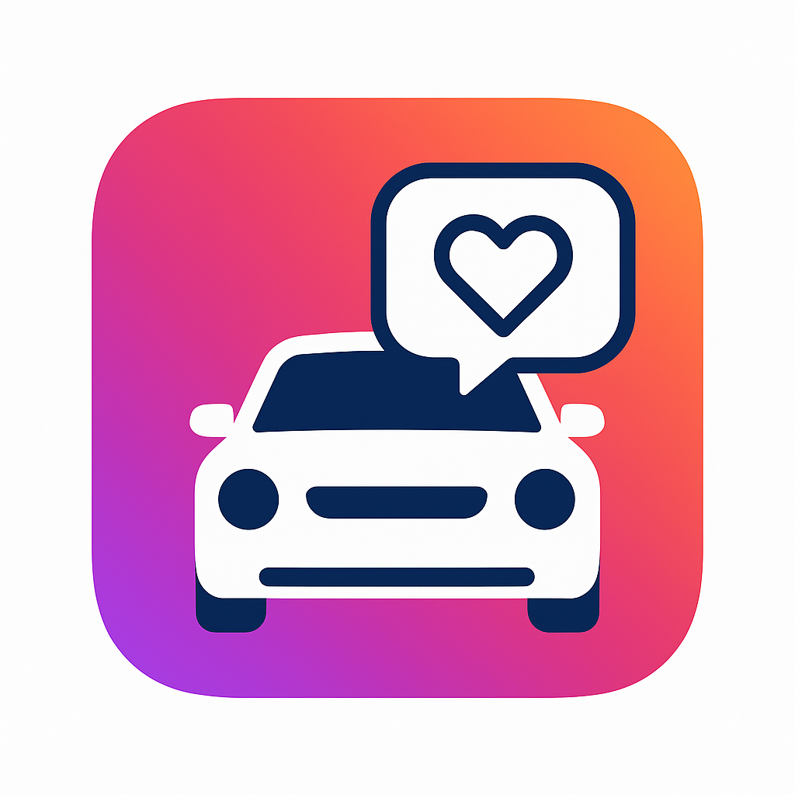

Senior Capstone Toolio
Opted to design an autosorting toolbox.

Battle Bots
RoboJackets Battle Bots 3 lb team member.

Hytech Racing
Hytech racing Controls / Suspension team member.

Shipwrecked Blossoms
Culturally inpsired creative design project.

Live streaming bot.
Python Project connecting enhancing livestream capabilities.

Patriot Missile Team Intern
Raytheon (RTX) – Patriot Missile Team Intern May 2025 - August 2025
As an engineer on the Patriot missile program at Raytheon, I improved manufacturing efficiency by conducting DFM reviews that identified five critical issues and updating a drawing specification that cut supplier errors by 95%. My analytical work included performing a 30-part tolerance stack-up to ensure sub-assembly fit and calculating an assembly's center of gravity to within ±0.1 lb. I solved a key production issue by designing a new CCA prototype and creating three custom test fixtures, which eliminated all post-installation heat cycle failures. Additionally, I managed the engineering change request process for the Patriot shelters, ensuring strict configuration control and 100% BOM accuracy.
Plate Pulse
Developing a social media application for automotive enthusiasts.
As the Founder of Plate Pulse, I am developing a cross-platform social media application using React Native to connect the automotive enthusiast community. I implemented a core feature for license plate lookups by integrating a third-party DMV API with end-to-end data encryption. To scale the platform, I am also assembling a team of software engineers and marketing personnel to boost market visibility and drive user acquisition.
Elephant in the Room
My ME 2110 Project.

Details about the 'Elephant in the Room' ME 2110 project will go here.
More Projects Soon!
Currently working on development of website for GT startup.